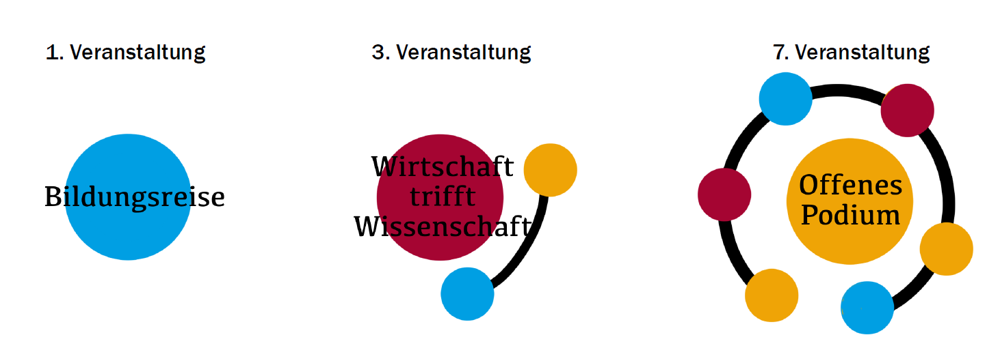

5. Aufgabe: Generatives Logo
Gestalten Sie ein dynamisches AKA generatives AKA veränderliches Zeichen für die öffentlichen Veranstaltungsreihen des Transferund Innovationsmanagements (TIM) der Osnabrücker Hochschulen!
1. Version

2. Version
Finale Version